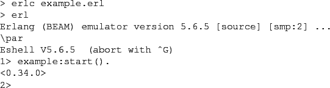
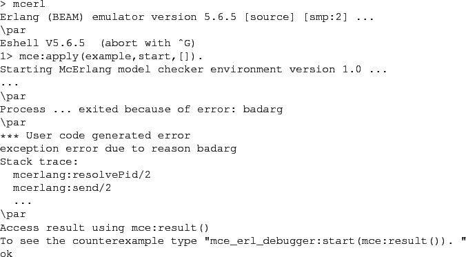
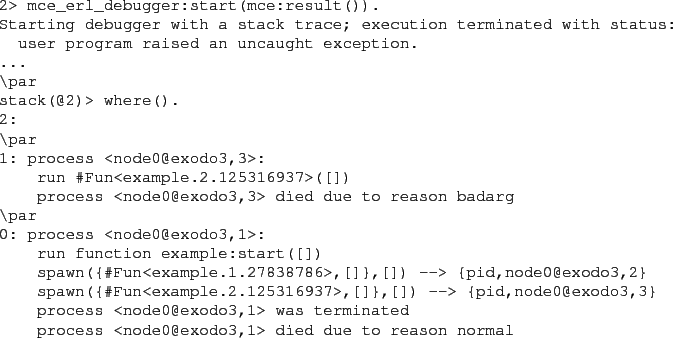

Next: Limitations Up: Introduction Previous: The McErlang Workflow Contents
We illustrate the use of the tool with the smallish example below.
Two processes are spawned, the first starting an ``echo'' server
that echoes received messages, and the other process invokes the echo
server:
![\begin{lstlisting}[language=Erlang]
-module(example).
-export([start/0]).
\par
...
... receive
{msg,Client,Msg} ->
Client!{echo,Msg},
echo()
end.
\end{lstlisting}](img1.png)
Let's run the example under the standard Erlang runtime system:

That worked fine. Let's try it under McErlang instead.
To do so we first have to recompile the module
using the McErlang compiler:
Then we run it:

Ah, so there was an error. Let's find out more:

Apparently in one execution trace the second process spawned (the one calling
the echo server) was run before the echo server itself, and of course
upon trying to send a message @echo!msg,self(),'hello world'@
the @echo@ name was not registered.